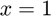

TIME_EVALUATION
Time the evaluation of a function.
Back to Simple Unit Testing Toolbox Contents.
Contents
Syntax
TIME_EVALUATION(f) TIME_EVALUATION(f,args) TIME_EVALUATION(f,args,n_eval) TIME_EVALUATION(__,print) time = TIME_EVALUATION(__)
Description
TIME_EVALUATION(f) determines the average evaluation time of the function f. By default, f is evaluated 1000 times in order to compute the average evaluation time.
TIME_EVALUATION(f,args) determines the average evaluation time of the function f when given the input arguments specified by args. By default, f is evaluated 1000 times in order to compute the average evaluation time.
TIME_EVALUATION(f,args,n_eval) does the same as the syntax above, but also specifies the number of times the function should be evaluated when computing the average evaluation time.
TIME_EVALUATION(...,print) does the same as the syntaxes above, but also allows the user to specify whether or not the average evaluation time should be printed to the Command Window.
time = TIME_EVALUATION(...) also returns the average evaluation time.
Inputs
| Variable | Description | Format | Units |
| f | function handle assigned to function you want to time | 1×1 function_handle |
- |
| args | (OPTIONAL) input arguments to functions (defaults to empty cell array) | cell array | - |
| n_eval | (OPTIONAL) number of times to evaluate functions when determining average evaluation time (defaults to 1000) | 1×1 double |
- |
| (OPTIONAL) true if test result should be printed to Command Window, false otherwise (defaults to true) | 1×1 logical |
- |
Outputs
| Variable | Description | Format | Units |
| time | average function evaluation time | 1×1 double |
s |
Example #1: Timing using default number of function evaluations.
Let's define a function we want to time the evaluation of.
f = @(x) x*sin(asin(x))*cos(acos(x))*tan(atan(x));
Getting the average evaluation time using the default number of function evaluations and an evaluation point of ,
TIME_EVALUATION(f,{1});
Average function evaluation time: 2.7335e-07 s
Example #2: Timing using a custom number of function evaluations.
Let's consider the same function as in the previous example.
f = @(x) x*sin(asin(x))*cos(acos(x))*tan(atan(x));
This time, let's get an average evaluation time using only 100 evaluations.
TIME_EVALUATION(f,{1},100);
Average function evaluation time: 3.3294e-07 s
Example #3: Returning the time but not printing.
Let's consider the same function as in the previous examples.
f = @(x) x*sin(asin(x))*cos(acos(x))*tan(atan(x));
Instead of printing the timing result to the Command Window, we can also return it directly.
time = TIME_EVALUATION(f,{1},[],false)
time = 2.7578e-07